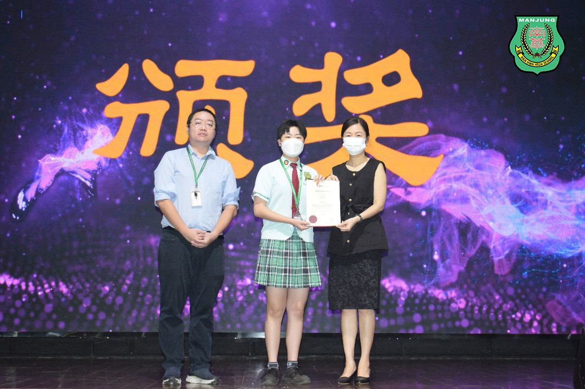
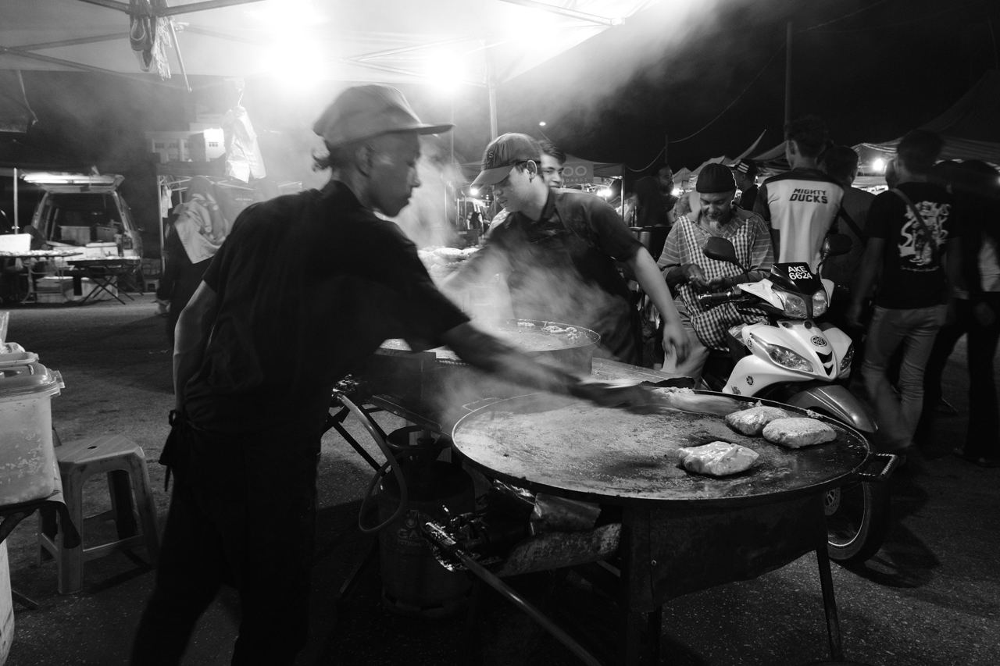

为兴趣挑战与突破
为兴趣挑战与突破
南华学生张诗静获摄影比赛优秀奖
本校张诗静同学，以《马来夜市》摄影作品荣获由董总主办的“2023年马来西亚日摄影比赛”优秀奖。今年的比赛主题是“我们美好的饮食文化！”，旨在展示马来西亚多元文化中的饮食之美。
张诗静的摄影作品《马来夜市》展现了马来西亚夜市的生动场景，生动地捕捉到摊贩的忙碌与人群熙攘、食物丰富多样的画面，符合比赛主题的要求。张诗静表示，虽然原计划在校园内拍摄，但作品始终未能切合比赛主题，因此在本校董事长颜登逸先生及刘文琸博士的建议与带领下，决定前往斯里曼绒的夜市，挑战密集人群所带来的拍摄难度，经过不断调整拍摄角度，最终创作出理想的作品。
获奖后，张诗静发表了感言，她表示：“自己没有尝试过校外比赛，抱着试一试的心态参加了比赛。当我得知获奖的消息时，我感到非常兴奋。对我来说，摄影是未来的选择，这次的奖项是一个小小的里程碑。我相信努力总会有回报。” 她还感谢了南华独中的摄影导师董事长颜登逸先生、刘文琸博士以及摄影选修课老师黄冠铭老师，以及学校提供的摄影艺术选修课，使她能够深入研究摄影技巧。她希望未来能够不断进步，更进一步探索摄影的世界。
这个荣誉不仅是对张诗静的个人成就的认可，也是南华独中的骄傲，展示了学校对学生发展兴趣和才能的支持。
#摄影比赛 #马来夜市 #张诗静
#南华独中 #曼绒 #实兆远

